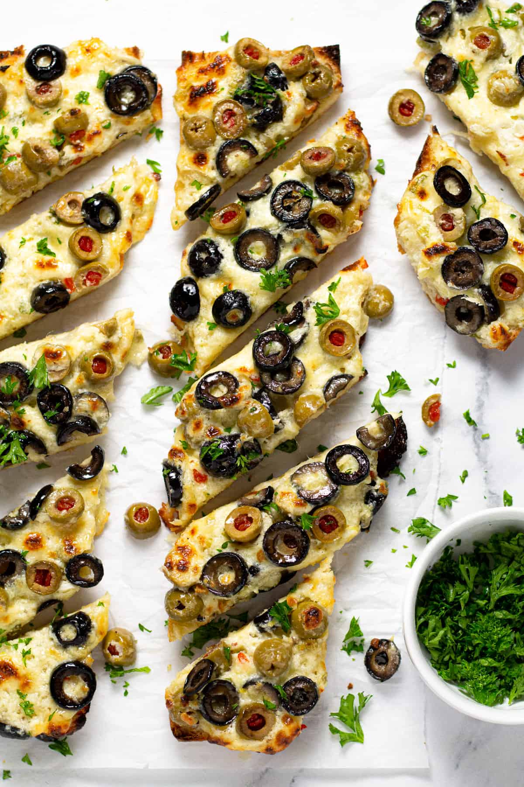

Olive Cheese Bread

The ultimate easy appetizer
cheese lovers and olive lovers alike are going to enjoy this quick and
easy snack!
Ingredients
- Sour Cream
- Garlic Powder
- Butter
- Salt & pepper
- Cheese
- Green Onion
- Olives
- French Bread
- Fresh Parsley
Steps
-
In a medium bowl combine sour cream, garlic powder and butter along with
a large pinch of salt and pepper.
- Stir until mostly smooth.
- Add cheese and green onion.
- Stir until well combined.
- Add olives.
- Gently fold olives into the cheese mixture.
-
Slice French bread loaf in half widthwise and then in half lengthwise.
-
Divide the olive mixture between the four pieces, spreading it in an
even layer on the cut side of the bread.
-
Bake for 20-25 minutes or until cheese is melted and the ends start to
get golden brown.
-
roil for 1-2 minutes or until the cheese starts to get dark golden
brown. Slice, garnish with fresh parsley and enjoy!
Odin Recipes